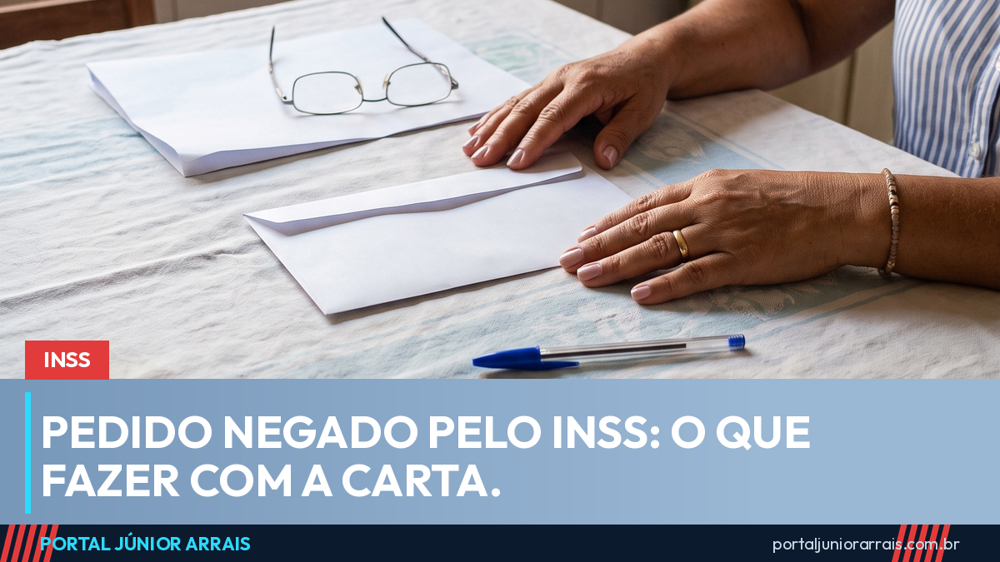

Pedido negado pelo INSS: o que a carta diz e o que dá para fazer

Receber a negativa do INSS é um baque, e a reação mais comum é a pior de todas: guardar o papel na gaveta e desistir. Uma parcela grande dos pedidos é negada, e boa parte dessas negativas tem conserto — desde que se saiba por que aconteceu.
O papel mais importante é a carta
A comunicação de decisão traz o motivo da negativa. E o motivo muda completamente o caminho seguinte. Os mais comuns são:
- falta de qualidade de segurado — para o INSS, você tinha parado de contribuir há tempo demais quando pediu;
- falta de carência — faltou tempo mínimo de contribuição;
- não constatada incapacidade — o perito reconheceu a doença, mas entendeu que ela não impede o trabalho;
- renda familiar acima do limite — típico do BPC;
- falta de documento ou tempo de trabalho não comprovado.
Repare que são problemas de natureza bem diferente. Negativa por falta de documento se resolve juntando o documento. Negativa por "não constatada incapacidade" é discussão médica. E negativa por tempo não reconhecido pode virar discussão de prova.
Existe prazo, e ele corre
Contra a decisão cabe recurso administrativo, analisado por um órgão diferente de quem negou. O prazo é de 30 dias contados da data em que você toma ciência da decisão. Deixar o prazo passar não apaga o direito, mas fecha esse caminho mais rápido e obriga a recomeçar.
Também é possível discutir a negativa na Justiça. Qual dos caminhos vale mais a pena depende do motivo que está escrito na carta — não existe resposta única.
Guarde tudo
A carta, o número do pedido e as datas são o que sustenta qualquer discussão depois. Jogar fora esse papel atrapalha bastante.
Cuidado com golpe
Negativa recente atrai golpista, porque a pessoa está fragilizada e com pressa. Aparecem ofertas de "reverter em 48 horas", cobrança de taxa adiantada por Pix e pedido de senha para "acompanhar o processo". Não existe reversão instantânea, e recurso administrativo não tem custo de taxa.
Com a carta em mãos, o passo sensato é procurar um profissional de sua confiança para ler o motivo da negativa e dizer o que cabe no seu caso, dentro do prazo.
Conteúdo informativo — não substitui orientação individualizada sobre o seu caso.